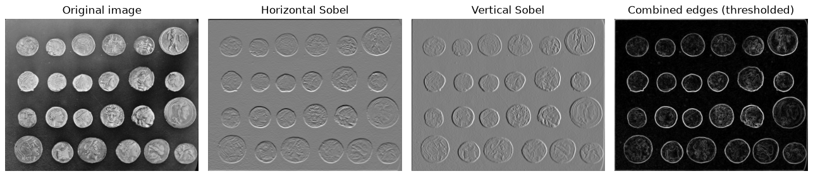
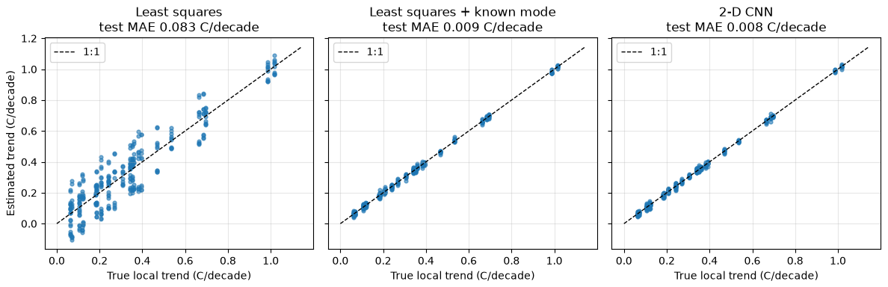
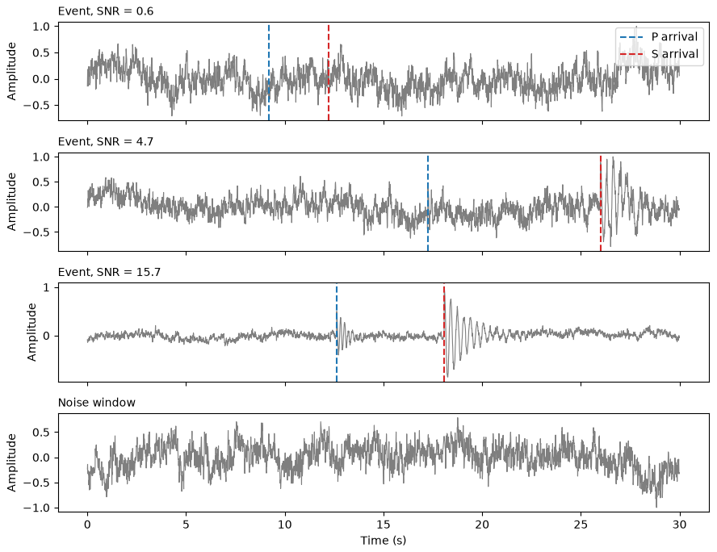
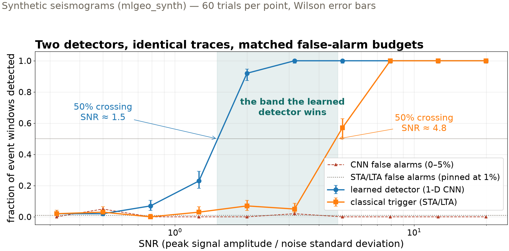
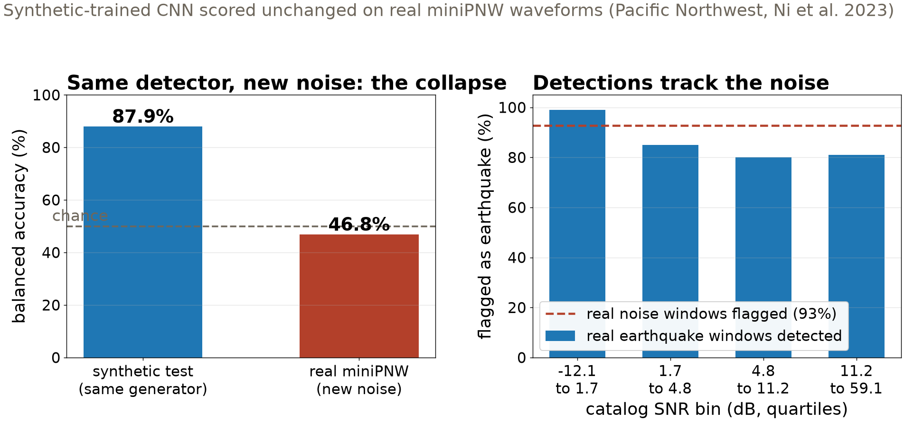

Session 22 · Fri Nov 20 · Book section 4.3
📡
Observatories have run one detector for fifty years.
When does a learned detector beat the classical one — and how would you know?
Reading: 4.3 Convolutional neural networks
📖 The origin: convolution + pooling + a dense head, reading handwritten digits in 1998.
LeCun, Y., Bottou, L., Bengio, Y., & Haffner, P. (1998). Gradient-based learning applied to document recognition. Proceedings of the IEEE, 86(11), 2278–2324.
✓ ConvNetQuake: a 1-D CNN scanning continuous seismograms, finding earthquakes the catalog missed — today’s detector at research scale.
Perol, T., Gharbi, M., & Denolle, M. (2018). Convolutional neural network for earthquake detection and location. Science Advances, 4(2), e1700578.
✗ Networks that score well by latching onto the wrong cue — the failure our miniPNW reality check measures today.
Geirhos, R., et al. (2020). Shortcut learning in deep neural networks. Nature Machine Intelligence, 2, 665–673.
📖 The field map: where learned detectors displaced classical pipelines in solid Earth science, and where they have not.
Bergen, K. J., Johnson, P. A., de Hoop, M. V., & Beroza, G. C. (2019). Machine learning for data-driven discovery in solid Earth geoscience. Science, 363(6433), eaau0323.
From digits (1998) to earthquake catalogs (2018) — and the shortcut failure mode we will measure ourselves today.

A 3×3 kernel finds edges wherever they occur. A CNN learns its kernels from data — early layers rediscover edge detectors on their own. (Sample photograph, scikit-image.)

The CNN beats naive least squares 10× (0.008 vs 0.083 °C/decade MAE) — but give the classical fit the one confounding mode it was missing and it matches the CNN at 0.009. A 10× win over an underspecified baseline. Synthetic (mlgeo_synth).

Event windows at low SNR are invisible by eye — exactly the regime where a detector must be measured, and where real catalogs cannot measure it. Synthetic (mlgeo_synth).

At matched ~1% false alarms: CNN crosses 50% at SNR ≈ 1.5, the trigger at ≈ 4.8. At SNR 2 the CNN catches 92% of events; STA/LTA catches 7%. Half a decade of SNR is the entire territory the learned detector wins.

87.9% on synthetic test → 46.8% on real miniPNW: chance. The network flags 93% of real noise windows — it responds to Pacific Northwest microseism noise, not to earthquakes. The gap is the measurement. Real data: miniPNW (Ni et al. 2023).
| Case | Naive classical | Informed classical | CNN | Verdict |
|---|---|---|---|---|
| Warming trend (2-D) | 0.083 °C/dec | 0.009 °C/dec | 0.008 °C/dec | write the physics down and they tie |
| Detection floor (1-D) | 50% at SNR ≈ 4.8 | — | 50% at SNR ≈ 1.5 | CNN wins the low-SNR band |
| Real miniPNW | — | — | 46.8% (chance) | synthetic-only validation is not validation |
The learned detector earns its keep only where the classical method cannot reach — and only on data from the world it was trained in.
pixi run jupyter lab → mlgeo_4.3_CNN.ipynb: run the convolution and LeNet warm-up quicklyPyTorch names live here: nn.Conv1d/nn.Conv2d, nn.MaxPool1d, nn.AdaptiveAvgPool1d, torchinfo.summary · HW-CML due today · Mon: sequence models (4.4), HW-DL assigned
ESS 469/569 · Machine Learning in the Geosciences · Autumn 2026